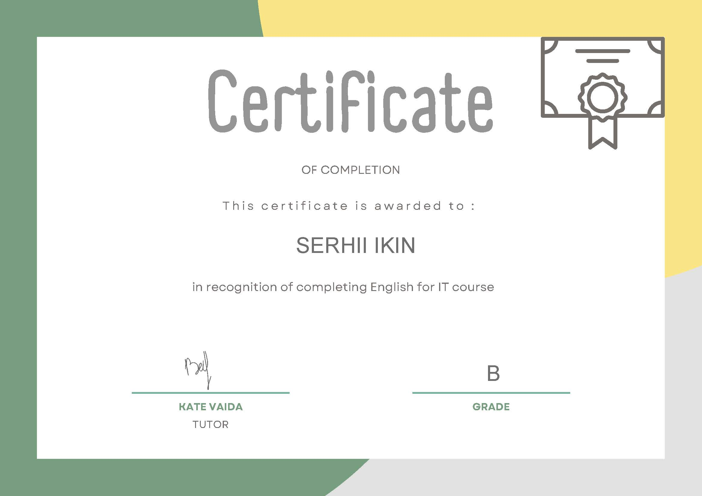

Сергій Ікін
Junior Frontend розробник
Contacts
- Kibæk,Danmark
- +4550246519 (Telegram)
- messileonl@gmail.com
- Linkedin Сергій Ікін
- Моя сторінка на GitHub
Загалом:
Я закінчив курси в ІТ -школі Hillel.Майтю хороші знання HTML, CSS, JavaScript, React.js та трохи Node.js. Шукаю ваканції на позицію Frontend розробника. Що мені найбільше подобається в цій професії, це дивитися на результат моєї роботи, це надихає мене зробити це краще і розвиватися в цій галузі.
Мої навички :
- HTML: семантика, специфікація, гумовий та адаптивний макет, BEM методологія
- CSS: flexbox, Grid, Scss, Перетворення, переходи, анімації, bootstrap, mui
- Git, Github
- Gulp, Webpack
- RegExp, WebSocket, Cookie, LocalStorage
- Figma, Adobe Photoshop
- JavaScript( примітиви, об'єкти, масиви, функції )
- Навички маніпулювання за допомогою DOM дерева
- Основні моделі програмування
- OOP in Javascript
- REST API
- MVC/MVP/MVVM архітектура
- Library React for SPA
- Принципи маршрутизації на прикладі бібліотеки react-router
- Зберігати стан програми на прикладі redux and redux-thunk
Іноземні мови
- English (A2,Intermediate)
- Danish (B1,Upper Intermediate)
Досвід роботи
Сервісна робота, 5 years, 2010-2015, 6 month, 2016-2017
- Кальянщик
- Doker Pub, Jaguar
Робота в галузі транспорту, 6 місяців, 2015-2016
- Таксист
Робота в галузі сільського господарства, 4.5 роки, 2017-2021
- Працівник свинячої ферми
- Данія
Освіта
- Національний університет біоресурсів та управління природою, 2008-2014 Факультет інформаційних технологій(Майстер)
Додаткова освіта, курси
-
Hillel Course, Frontend Basis (08.07.2021 - 27.09.2021)

-
Hillel Course, Frontend Pro (09.12.2021 -
19.04.2022)

-
Відгук мого вчителя з курсу Frondend Pro:
Сергій, максимально відповідальний та активний студент! В рамках курсу максимально швидко схоплював інформацію. Протягом курсу ставив точні питання для розуміння нової інформації. Успішно закінчив курс з найвищим балом, зайнявши 1-е місце у рейтингу.
-
Датська школа, датська мова, 2.5 years

-
Англійський ІТ -курс

Є можливість завантажити резюме у форматі PDF.